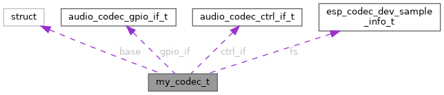

TermostatBox3
Loading...
Searching...
No Matches
Javni atributi
|
Seznam vseh metod / atributov
Struktura my_codec_t
Kolaboracijski diagram razreda my_codec_t:

[
legenda
]
Javni atributi
audio_codec_if_t
base
const
audio_codec_gpio_if_t
*
gpio_if
const
audio_codec_ctrl_if_t
*
ctrl_if
esp_codec_dev_sample_info_t
fs
float
hw_gain
bool
is_open
bool
muted
bool
enable
Opis strukture je zgrajen na podlagi naslednje datoteke :
managed_components/espressif__esp_codec_dev/test_apps/codec_dev_test/main/
my_codec.c
Izdelano s pomočjo
1.9.8